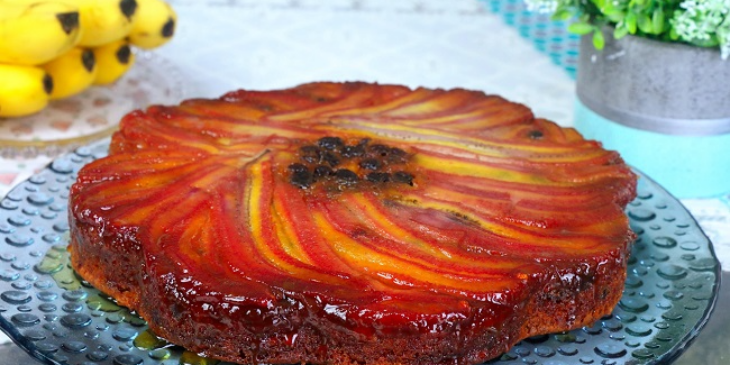

Bolo de Banana

Description / Descriçao
Essa receita de bolo de banana com calda vai te surpreender!
O resultado é muito parecido com bolos vendidos nas melhores padarias por conta da calda de caramelo que o diferencia do bolo caseiro.
Preparado para babar? Então já chama a família toda que essa receita rende 12 porções!
Ingredients / Ingredientes
Calda
- 1 xícara de açúcar
- 4 a 5 bananas
Massa
- 3 colheres (sopa) de margarina
- 3 ovos
- 1 pitada de sal
- 1 e 1/2 xícara de açúcar
- 2 xícaras de farinha de trigo
- 1 xícara de leite
- 1 colher (sopa) rasa de fermento
Steps / Modo de Preparo
Calda
- Leve o açúcar ao fogo numa forma até que derreta por completo, formando um caramelo.
- Adicione à calda bananas fatiadas.
Massa
- Comece batendo as claras em neve na batedeira ou a mão. Reserve.
- Separadamente, bata o açúcar, a margarina e os ovos com um garfo, fouet ou batedeira em potência leve.
- Adicione o leite, o sal, o fermento e a farinha.
- Acrescente as claras em neve sem parar de bater.
- Finalizada essa etapa, despeje a massa na forma previamente caramelizada e leve ao forno a 180° C por 30 minutos.
Tip / Dica
Se preferir, pode cozinhar o caramelo numa panela e despejar na forma em seguida!
Return to top
Retornar a página inicial
<<<<<<< HEAD